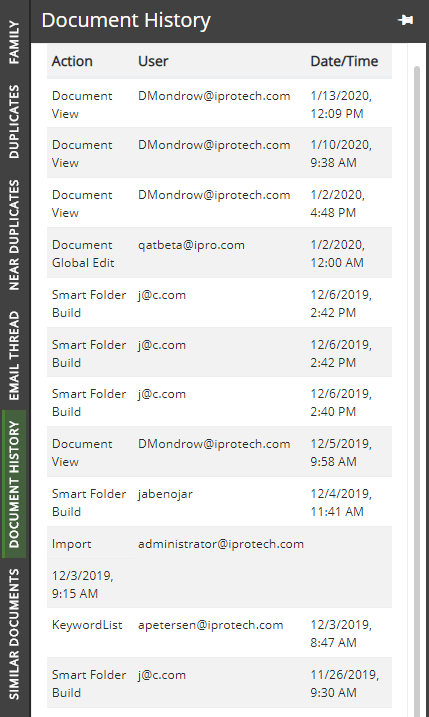

The Document History panel (read only) displays a list of actions, such as redactions and tags, that were taken for a current document, sorted chronologically, as shown in the following figure.

For each Action type, a User and Date/Time is displayed. Examples of Action types include but are not limited to: viewed, highlighted, redacted, tagged, field edits, produced, text embedded, imaged, document edits, mass edits.
Click an action item to display further details as shown in the following figure.
If no changes were made to a document, a message displays stating that no history exists for the selected document.